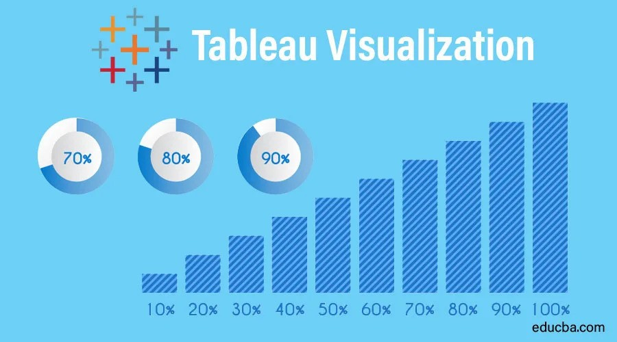
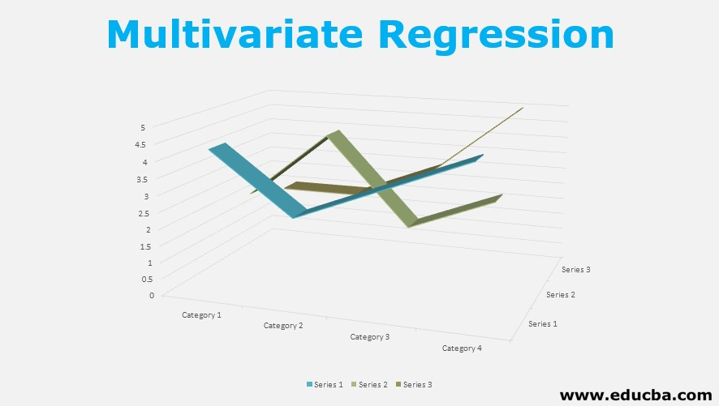

In this project, a SQL-based relational database for a healthcare organization was designed and analyzed, ensuring 3NF normalization and creating an EER diagram. Advanced SQL queries were executed, and database procedures were documented.

This project analyzes ETF datasets to identify top-performing ETFs and assess factors such as volatility, returns, and domicile country. It uses Python to evaluate investment strategies and optimize portfolios based on performance metrics and risk factors.
This project leverages machine learning techniques to analyze and predict bike sharing demand in Seoul, using a comprehensive dataset that includes rental counts, weather conditions, and holiday information to optimize resource allocation and enhance system efficiency.

Explore a collection of my Tableau projects, including a beginner’s Superstore Sales Dashboard, a dynamic Gapminder world indicators analysis, and an in-depth study of Harvard and MIT online courses. Each project showcases my data visualization skills, storytelling abilities, and knack for uncovering insights. Stay tuned for more projects as I continue to delve into diverse data challenges and visualization techniques.

In this project, I used Excel to perform multiple regression analysis to predict temperature variations in Islamabad, Pakistan. By analyzing data from the Open-Meteo Historical Weather API for January 2023, I examined how humidity, dew point, pressure, cloud cover, and wind speed affect temperature.
This project comprehensively analyzes Odoo and SAP ERP systems through practical demonstrations and comparative evaluations. It includes detailed YouTube videos showcasing the implementation of key ERP functionalities such as RFQ creation, sales order processing, website integration, and point-of-sale operations. The comparative study highlights differences in user interfaces, capabilities, and business scopes between Odoo and SAP, offering valuable insights and personal learning experiences from exploring these ERP systems. The YouTube videos for this project have received over 700 views, effectively educating the community on ERP systems. This significant viewership highlights the project's success in making the functionalities of Odoo and SAP accessible and understandable to a broad audience.

In this section, I reviewed and presented two key articles related to data management and analytics. The first project examines the challenges associated with Big Data and the proposed solutions to address these challenges. The second project explores how advanced analytics can enhance business operations and provide a competitive edge. These presentations demonstrate my ability to effectively summarize and communicate complex concepts derived from scholarly articles.